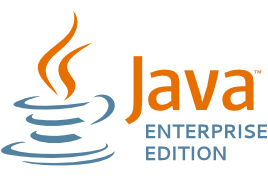
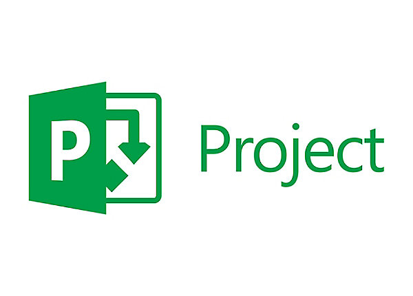

Simone Casamassa
If you can dream it, you can do it.
If you can dream it, you can do it.
| Cashout System:
Progettazione e sviluppo di un modulo software necessario per includere una nuova funzionalità di gioco legato al Betting sportivo. Il sistema integra vari sistemi aziendali del cliente con un prodotto esterno, orchestrando i flussi operativi e arricchendo le funzionalità di business del prodotto esterno. L'integrazione con i sistemi aziendali è stata realizzata tramite topic Kafka ed interfacce REST; la gestione dei dati avviene tramite Data Grid distribuito Oracle Coherence ed è organizzata al fine di fornire tramite interfacce REST i valori di cashout di un biglietto fornito in input. E' stato inoltre progettato un rule engine necessario per abilitare/disabilitare dinamicamente la funzionalità rispetto a vari paraemtri di business. Contributi personali al progetto:

|
|---|
| Betting Offer System:
Progettazione e sviluppo di un sistema centralizzato per la gestione della Betting Offert sportiva. Il sistema riceve in input le variazioni della betting offer provenienti dai provider esterni e dai sistemi aziendali tramite code Kafka; la gestione dei dati avviene tramite Data Grid distribuito Oracle Coherence ed è organizzata al fine di fornire tramite interfacce REST e WebSocket la condivisione della betting offert verso i sistemi di gioco. Contributi personali al progetto:
|
| POC Terminali:
Progettazione e sviluppo di una POC per la reingegnerizzazione del processo di propagazione delle variazioni delle quote ai terminali client. Analisi e sviluppo di un processo ETL per l'inizializzazione e l'aggiornamento di un db in memory. Sviluppo di un client che fornirà tramite interfaccia REST i dati presenti nella cache locale collegata al db in memory. Contributi personali al progetto:
|
| Migrazione Office 365:
Progetto di migrazione del servizio email da Server On-Premises al Cloud Office365. All'interno del progetto rivestito il ruolo di PM interfacciandomi con il cliente, supportando la pianificazione delle attività del team di lavoro e semplificando la comunicazioni tra i numerosi attori che partecipano al progetto. Contributi personali al progetto:
 |
| Monitoraggio processi aziendali:
Presso il cliente progettazione e sviluppo di un sistema di monitoraggio per i principali processi operativi aziendali, come richiesto dalla delibera 655/2015. In particolar modo e' stato sviluppato un processo Extract Trasformation Load con il quale si estraggono i dati di processo SAP importandoli su Db Oracle, intervenendo con trasformazione e normalizzazione del dato. Sono infine calcolati tramite strumenti PL-SQL i report necessari al monitoraggio. La stesura degli algoritmi e' frutto di una collaborazione diretta con gli owner del Business Acea. Contributi personali al progetto:
|
| WIDESB:
Porting tecnologico e reingegnerizzazione dell'enterprise service bus di Wind, aggiungendo alle operazioni VETRO del bus la gestione degli stati dei processi transitati e la gestione automatizzata di operazioni di bonifica al fine di assicurare affidabilitC e resistenza a guasti dei sistemi esterni. In particolar modo si sono sviluppati Core Services JavaEE necessari al salvataggio dello stato dei processi, alla gestione dei fault e di tutti gli aspetti trasversali alle funzionalitC di business; sono stati poi sviluppati i flussi d'integrazioni tra i vari sistemi coinvolti relativi alle operazioni di business. Contributi personali al progetto:
|
| IAM:
Integrazione della suite Oracle Identity Management con il sistema software di H3G per la gestione delle identitC aziendali condividendo utenze e i relativi privilegi sulle risorse IT aziendali. Contributi personali al progetto:
|
| Sicurezza delle reti:
Progetto di consulenza commissionato da Wind legato alla sicurezza delle reti. In particolar modo ho contribuito all'analisi dei nodi, della topologia di rete e allo sviluppo della metodologia per la definizione del perimetro di rete da valutare in termini di conformitC alla normativa di sicurezza nazionale per le aziende di telecomunicazioni. Contributi personali al progetto:
|
| NFC:
Progetto di consulenza commissionato da una grande azienda di telecomunicazioni nazionale, la quale vuole eseguire azioni informative ed educative per rendere i consumatori maggiormente confidenti nell'uso della tecnologia NFC. L'obbiettivo del progetto C( stato quello di far simulare all'utente un'esperienza realistica legata alla tecnologia Near Field Comunication. E' stata sviluppata un app mobile android che sfruttando la tecnologia NFC simula servizi di Pagamento e di Ticketing. Si C( anche sviluppato una web application Java lato server con la quale comunica l'applicazione e che offre all'utente una seconda interfaccia tramite lo schermo di un Totem informatico. Contributi personali al progetto:
|
| Face Recognition:
AttivitC di tirocinio orientato al lavoro di tesi per la laurea triennale in Ingegneria Informatica. Progettazione e sviluppo di un'applicazione software che effettua il riconoscimento facciale a partire da riprese real time. L'applicazione permette di inserire nuovi utenti nel dataset e di testare l'efficenza dell'algoritmo Principal Component Analysis, offerto dalla libreria OpenCV. Contributi personali al progetto:
|